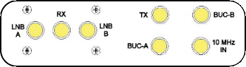
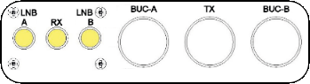

Arbitrator rear view
Click on the socket names to highlight the sockets.
AC power socket:100 to 240V AC mains supply.
Relay connections: These will change depending on which version has been fitted.
- Click here for the -1 version.
- Click here for the -2 version. Able to inject 10MHz reference to the non active antenna BUC. A short sma to sma cable must be fitted.
- Click here for the -3 version. For systems where the BUC DC power is supplied from the modem. TX uses N type sockets.
10MHz Out:Used only on the -2 version. There is short link between this port and 10MHz in.
DAC A & DAC B TMS:DAC A will connect to DAC (TMS) or MXP A's modem port and DAC B will connect to DAC (TMS) or MXP B's modem port.
Modem:This will connect the VSAT modem I.E Via the console port on an Idirect Modem.
OBM:Used to connect Out of band management to the modem.
Ethernet socket:This would be connected to a switch to allow access to the web interface and OpenAMIP connectivity.
Console port:Used for serial connection to the arbitrator by the means of CLI commands.

